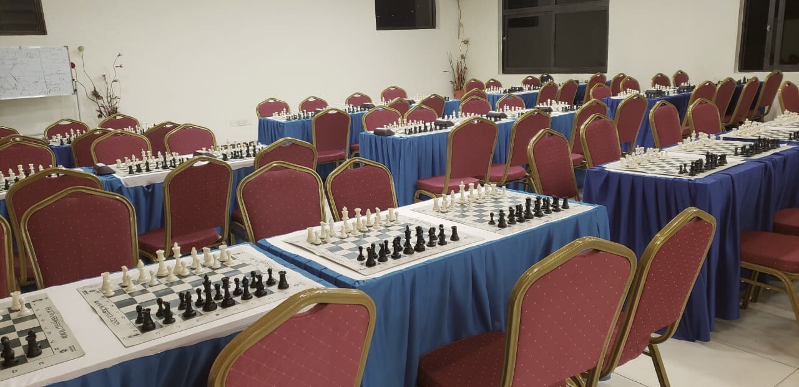

The hall, set for round one — Kericho Inter-Schools circuit
About
Welcome to Kericho Chess Club & Academy
We are the club behind the school chess clubs in Kericho town, Litein and the wider county. We coach learners inside their own schools, run the inter-school circuit with real clocks and scoresheets, supply the boards and clocks that keep the clubs alive, and stream the top boards on fixture days.
The method is simple and it has not changed: fundamentals first, tactics second, composure always. It starts with how each piece thinks, not just how it moves — and it travels back into the classroom, one square at a time.
Underneath the trophies sits the rule on our crest: Forward Ever, Backward Never.
Our Values
- Sportsmanship
- Deep thinking
- Composure
- Diligence
- Fairness
- Equal opportunity
At a glance
Kericho town · coaching across Kericho County
President & Head Coach: Shem Meso
Saturday Academy Club · 10:00 AM EAT
M-Pesa Paybill 880100
Partners
Calendar
More Events
Upcoming events
Standings
All Players
Top players
01Barasa K.Kapsaos Boys · U-146.5of 7
02Chebet A.Kericho Primary · U-126.0of 7
03Mutai D.Litein Academy · U-165.5of 7
04Wanjiru F.Greenhill Girls · U-125.0of 7
05Kiprono E.Kericho Primary · U-105.0of 7
A sample of the Season 25 circuit standings. Full tables are shared in the academy's WhatsApp group after every fixture.
News
More Articles
Latest from the academy
Kericho Inter-Schools Open · registration closes 21 November
Seven Swiss rounds across eight age categories, played with clocks and scoresheets. Entry is on the tournaments page, paid by M-Pesa Paybill 880100 and confirmed on WhatsApp.
Get the Whole StoryOur Secretary on the world stage with Team Kenya
Gladys Langat travelled with Team Kenya to the 46th FIDE Chess Olympiad in Samarkand, Uzbekistan — and brought the standard of play and organisation back to Kericho.
Get the Whole StorySaturday Academy Club: the weekly internal ladder
Board 1 streams from the club room every Saturday at 10:00 AM EAT. Ask on WhatsApp for a reminder the moment a board goes live.
Get the Whole StoryStart with the first lesson
Tell us the learner's age, school and goal. Shem maps the right track from there — usually the same day.